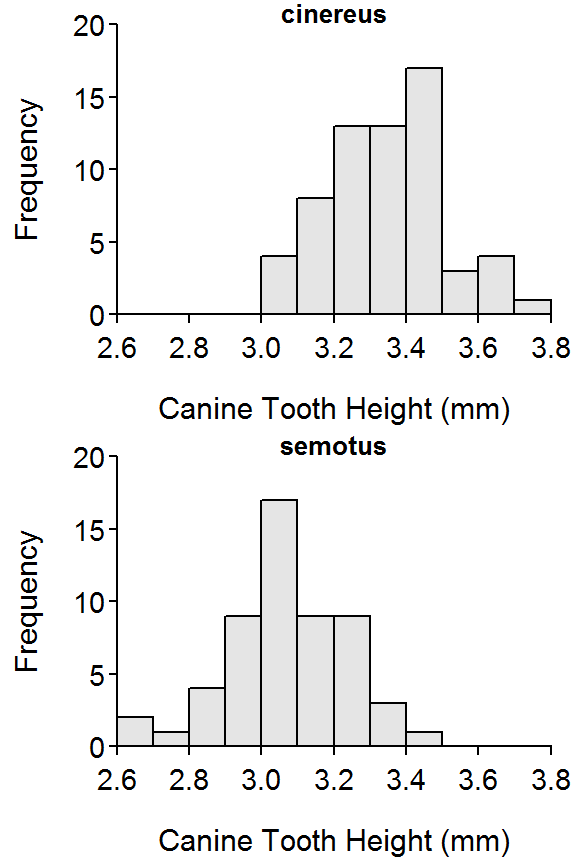
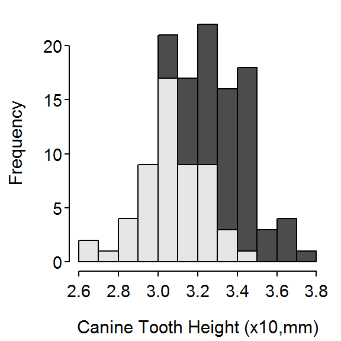
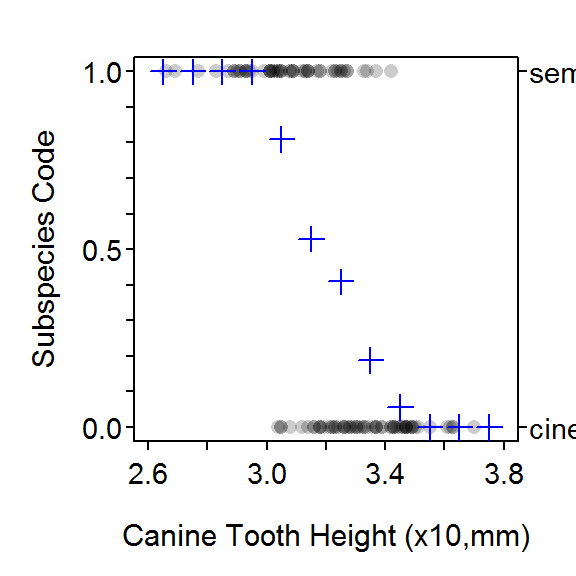
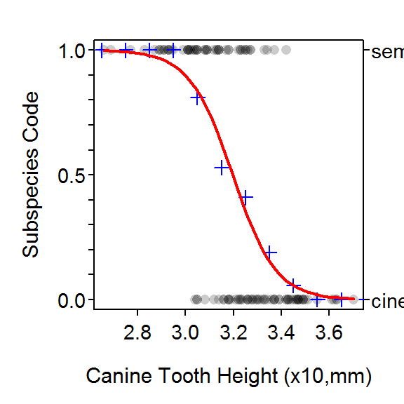
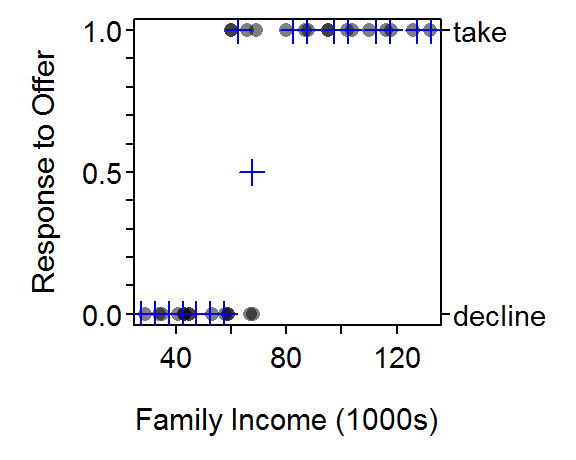
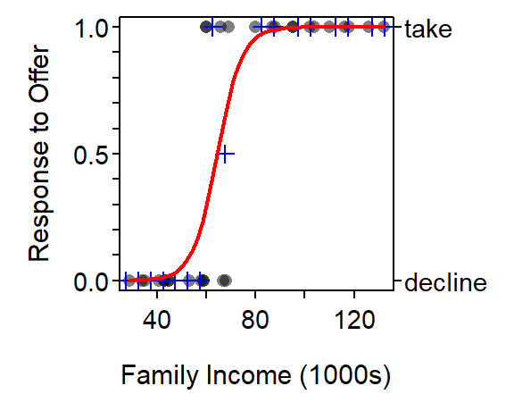

> library(NCStats)
> library(plotrix) #histStack()
> library(car) #bootCase()Researchers measured tthe canine tooth height (among other things) from two subspecies of bats () found in Hawaii. Their primary question was to determine if canine tooth height differed between the subspecies and, more importantly to them, could the canine tooth height be used to predict the subspecies of bat.
> setwd("C:/aaaWork/Web/GitHub/NCMTH207/modules/LogisticRegression")
> bat <- read.csv("Batmorph.csv")
> str(bat)'data.frame': 118 obs. of 7 variables:
$ subsp : Factor w/ 2 levels "cinereus","semotus": 2 2 2 2 2 2 2 2 2 2 ...
$ bodymass : num 19.5 16.2 17 16.5 14.3 ...
$ skulllength: num 1.6 1.55 1.56 1.56 1.53 ...
$ canine : num 0.326 0.308 0.291 0.287 0.301 0.305 0.277 0.313 0.289 0.293 ...
$ coronoid : num 0.303 0.282 0.292 0.303 0.279 0.284 0.286 0.281 0.278 0.28 ...
$ wingspan : num 0.358 0.358 0.359 0.353 0.351 0.361 0.351 0.363 0.34 0.365 ...
$ hab : Factor w/ 3 levels "A","B","C": 1 1 1 1 1 1 1 1 2 2 ...> bat$canine10 <- bat$canine*10
> xlbl <- "Canine Tooth Height (x10,mm)"
> ylbl <- "Subspecies Code"> hist(canine10~subsp,data=bat,breaks=seq(2.6,3.8,0.1),xlim=c(2.6,3.8),
xlab=xlbl,nrow=2,ncol=1)
> histStack(canine10~subsp,data=bat,breaks=seq(2.6,3.8,0.1),xlim=c(2.6,3.8),
col="gray.colors",xlab=xlbl,right=FALSE)
> plotBinResp(subsp~canine10,data=bat,breaks=seq(2.6,3.8,0.1),xlim=c(2.6,3.8),
xlab=xlbl,ylab=ylbl)
> glm1 <- glm(subsp~canine10,data=bat,family=binomial)
> fitPlot(glm1,breaks=seq(2.6,3.8,0.1),xlab=xlbl,ylab=ylbl,main="")
> summary(glm1)
Coefficients:
Estimate Std. Error z value Pr(>|z|)
(Intercept) 35.516 6.428 5.525 3.29e-08
canine10 -11.112 2.005 -5.543 2.97e-08
(Dispersion parameter for binomial family taken to be 1)
Null deviance: 163.040 on 117 degrees of freedom
Residual deviance: 97.178 on 116 degrees of freedom
AIC: 101.18
Number of Fisher Scoring iterations: 5> confint(glm1)Waiting for profiling to be done... 2.5 % 97.5 %
(Intercept) 24.21685 49.66132
canine10 -15.52430 -7.58941> x1 <- c(3,4) # purposely pick two canine10 values 1 unit apart
> ( p1 <- predict(glm1,data.frame(canine10=x1)) ) 1 2
2.179940 -8.931994 > p1[2]-p1[1] 2
-11.11193 > exp(-11.112) # back-transformed 'slope' from summary() above[1] 1.493206e-05> ( bp1 <- exp(p1) ) 1 2
8.8457728416 0.0001320944 > bp1[2]/bp1[1] 2
1.493306e-05 > ( p2 <- predict(glm1,data.frame(canine10=c(3,3.4))) ) 1 2
2.179940 -2.264834 > exp(p2)/(1+exp(p2)) 1 2
0.89843357 0.09407761 > predict(glm1,data.frame(canine10=c(3,3.4)),type="response") 1 2
0.89843357 0.09407761 > ( cfs <- coef(glm1) )(Intercept) canine10
35.51574 -11.11193 > p <- 0.5 # canine tooth height where subspecies ratio is 50/50
> ( x <- (log(p/(1-p))-cfs[1])/cfs[2] )(Intercept)
3.19618 > predict(glm1,data.frame(canine10=x),type="response") # test the answer(Intercept)
0.5 > p <- 0.9 # length where 90% are semotus, 10% are cinereus
> (log(p/(1-p))-cfs[1])/cfs[2](Intercept)
2.998444 > bc1 <- bootCase(glm1) # bootstrapping, be patient!
> head(bc1) (Intercept) canine10
[1,] 47.63420 -14.748328
[2,] 42.07082 -13.054643
[3,] 27.77390 -8.869351
[4,] 31.33596 -9.864708
[5,] 39.55912 -12.234736
[6,] 41.28284 -12.840528> confint(bc1) 95% LCI 95% UCI
(Intercept) 26.88953 52.688428
canine10 -16.50715 -8.470158> #hist(bc1,breaks=15)
> predProb <- function(x,alpha,beta1) exp(alpha+beta1*x)/(1+exp(alpha+beta1*x))
> predProb(3,coef(glm1)[1],coef(glm1)[2])(Intercept)
0.8984336 > p3 <- predProb(3,bc1[,1],bc1[,2])
> head(p3)[1] 0.9673657 0.9481860 0.7623938 0.8509199 0.9455720 0.9405459> quantile(p3,c(0.025,0.975)) 2.5% 97.5%
0.8129323 0.9688198 > predX <- function(p,alpha,beta1) (log(p/(1-p))-alpha)/beta1
> x50 <- predX(0.5,bc1[,1],bc1[,2])
> head(x50)[1] 3.229803 3.222671 3.131447 3.176572 3.233345 3.215042> quantile(x50,c(0.025,0.975)) 2.5% 97.5%
3.150347 3.243366 Households were asked if they would accept an offer to put solar panels on the roof of their house if they would receive a 50% subsidy from the state. Demographic variables for each household such as income, size, monthly mortgage payment, and age of the head of household were also recorded. The researchers had three primary questions:
> sp <- read.csv("SolarOffer.csv")
> str(sp)'data.frame': 30 obs. of 5 variables:
$ income : int 80 60 35 45 29 43 34 104 102 59 ...
$ age : int 30 34 25 27 23 28 24 43 46 36 ...
$ takeoffer: Factor w/ 2 levels "decline","take": 2 2 1 1 1 1 1 2 2 1 ...
$ mortgage : int 2000 2100 1500 1800 1900 1600 1500 2400 2700 2600 ...
$ famsize : int 4 3 2 4 2 3 1 5 3 2 ...> xlbl <- "Family Income (1000s)"
> ylbl <- "Response to Offer"> plotBinResp(takeoffer~income,data=sp,xlab=xlbl,ylab=ylbl,breaks=seq(25,135,5))
> glm2 <- glm(takeoffer~income,data=sp,family=binomial)
> summary(glm2)
Coefficients:
Estimate Std. Error z value Pr(>|z|)
(Intercept) -12.84503 6.16398 -2.084 0.0372
income 0.19934 0.09774 2.039 0.0414
(Dispersion parameter for binomial family taken to be 1)
Null deviance: 41.455 on 29 degrees of freedom
Residual deviance: 13.035 on 28 degrees of freedom
AIC: 17.035
Number of Fisher Scoring iterations: 8> fitPlot(glm2,xlab=xlbl,ylab=ylbl,breaks=seq(25,135,5),main="")
> p <- 0.25
> (log(p/(1-p))-coef(glm2)[1])/coef(glm2)[2](Intercept)
58.92646 > predict(glm2,data.frame(income=80),type="response") 1
0.9569831